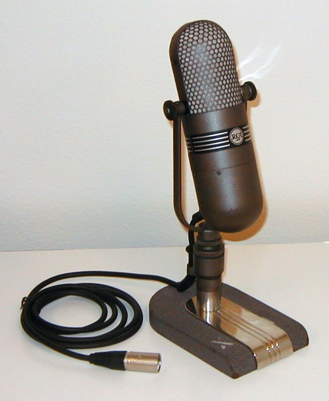
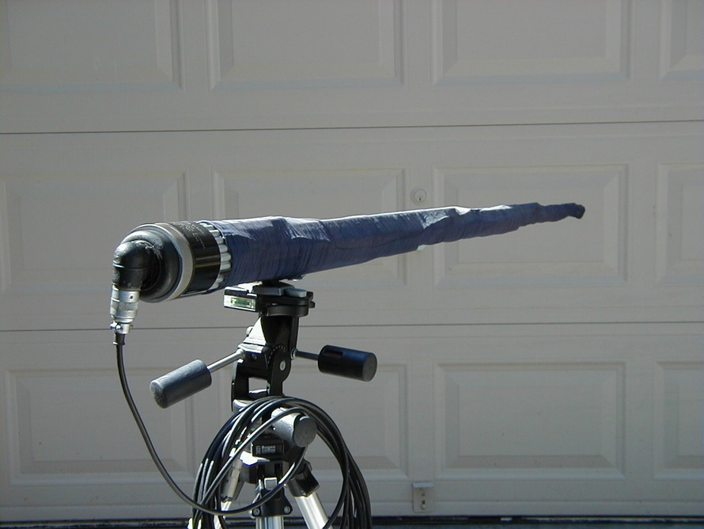
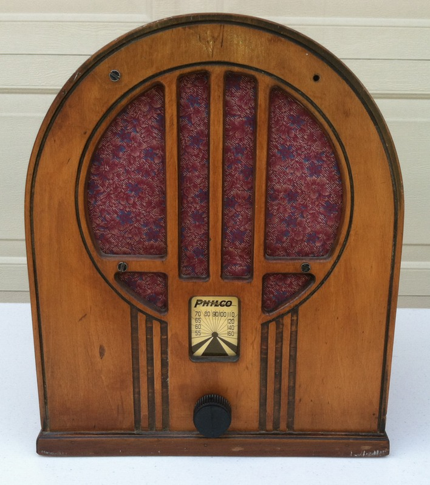
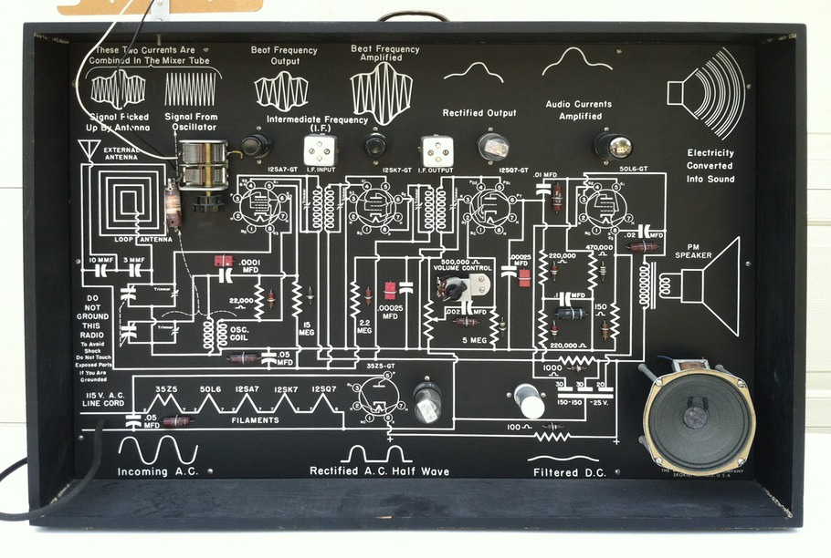
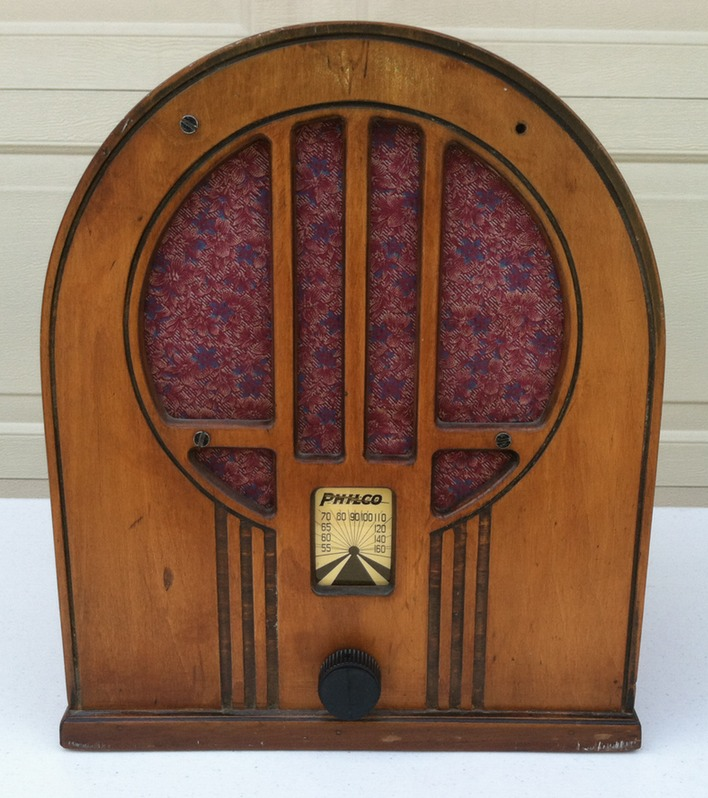
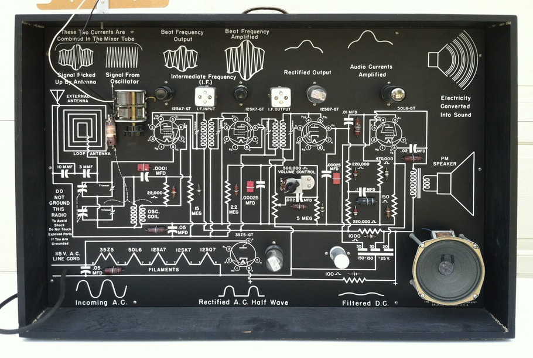

RCA 77DX microphone

Western Electric D-99098

Philco radio

Training radio
Otari MX-70
A museum of 20th century
technology
From the microphone in a studio to a speaker in the home, radio broadcasting became the most important communication medium for most of the 20th century.
The RCA 77-DX is one of the most recognizable microphones from the Golden Age of Radio. This one is from 1943 and works very well.
This unusual Western Electric D-99098 from 1931 will pickup sound from long distances. It is over 5 feet long.
Philco, one of the big names in radio, manufactured receivers for most of the 20th century.
The Training Radio illustrates how the radio received the signal and played through the speaker. It really works.
The Otari MX-70 is a 16-track tape recorder. This is what analog really looks like.
We also have a selection of period radio show openings that can be heard as they were intended: on a radio.
RCA 77DX microphone
Western Electric D-99098

Philco radio

Training radio
Otari MX-70